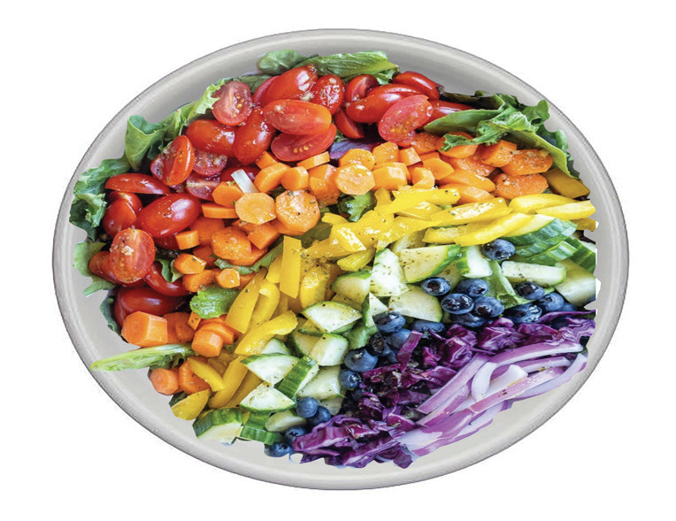

Preparation of salads
Salads require careful hygienic preparation due to their high risk of contamination. When preparing salads, keep the following points in mind:
(i)
Make sure the ingredients are thoroughly cleaned, crisp and fresh.
(ii)
To maintain the freshness and crispiness, prepare the ingredients just before serving.
(iii)
Include a variety of flavours, colours and textures to make the salad tasteful. Examples of salad include fruit and vegetable salad, arranged vegetable salad and mixed cooked vegetable salad.
Fruit and vegetable salad
Ingredients (serve 4 people)
| 4 carrots | 4 tomatoes |
| 1 yellow pepper | 1 onion |
| 1 cucumber | |
| Blueberries | |
| 1 purple cabbage | |
| 1 bunch kale (green vegetable) |
Method
1.
Wash the ingredients
2.
Peel and chop onions
3.
Shred cabbage
4.
Chop carrots, pepper, cucumber and tomatoes
5.
Arrange kale in a dish followed by other ingredients as shown in Figure 4.23.

80